[基隆] 安一五郎海產
| 餐廳名稱: | 安一五郎海產 |
|---|---|
| 地 址: | 基隆市安一路46號 |
| 營業時間: | 週一 ~ 週日 10:00 – 22:00 |
| 電 話: | 02 2422 7710 |
這間安一五郎海產 是 滴口水的吃吃喝喝 Jeff 說不錯的海鮮店，慕名很久。 今天與友人一家聚餐吃螃蟹，剛好龜吼漁港超級大爆滿，頭城海鮮又怕雪隧塞車，就敲定這間基隆火車站後面的 老海鮮店。
附近基隆火車站的旁邊，孝四路上面，有個 “正好停” 停車場，大約中午 12 點只剩幾個車位了。然後從停車場出入口附近孝四路上爬樓梯上的天橋， 往後火車站方向就是安一路了。 安一路與基隆火車站的中間，因為新基隆火車站將月台地下化，忠一路通車，變成寬廣的平面大馬路， 基隆火車站 前後站合體，去年才完工通車的。後站應該是會越來越繁榮了。
安一五郎海產已經經營很多年了，非常老派，點菜就是門口跟老闆點，看有什麼海鮮就點什麼。牆上有列一些拿手手菜，當然實際的菜色更多。 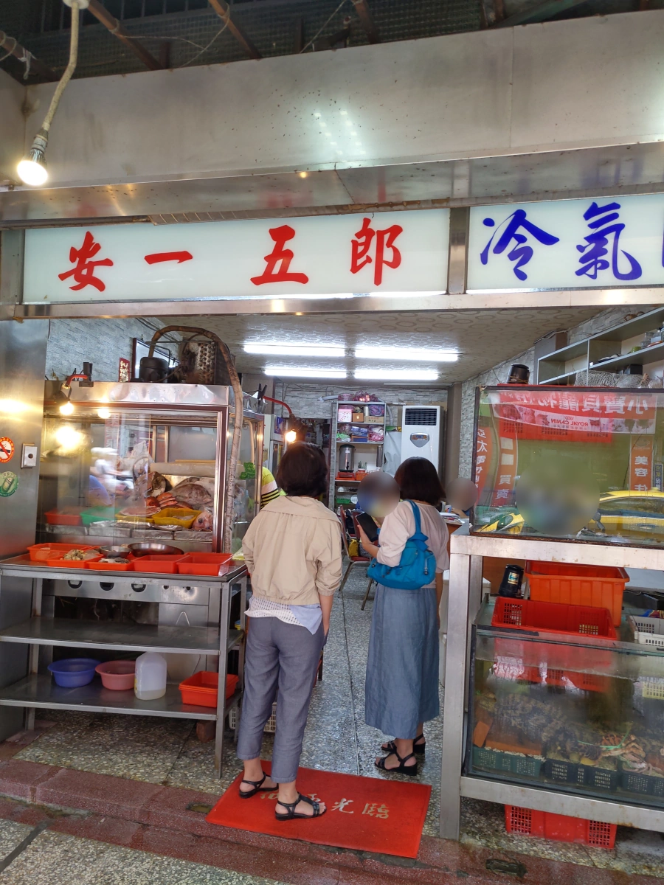
安一五郎海產門牌號碼是 安一路46號。門牌號碼同樣佔46號，面對安一五郎的左手邊，有一間 “安一路潤餅 現做潤餅”，小有名氣。 安一路44號 是 小文肉羹，剛到時，排隊排了十幾個人，都是要包便當回家當午餐的，聽說滷肉飯、肉羹是強項。 連著三間都算是名店，只是今天要專心吃安一五郎海產。 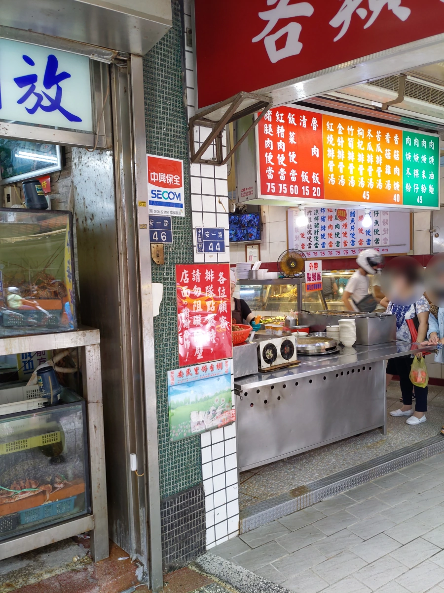
正門口裏面只有三張大桌，都坐滿了。正在思考要先登記時，老闆已經叫我們從旁邊巷子繞去後面， 我們又不是熟客，走進潤餅店旁邊的巷子，是不髒，有點陰暗潮濕，就在快要覺得走錯路時，看到安一五郎的後院了，似乎有兩層樓。 而前院跟後院的中間巷子，算是料理區吧。下圖就是後院的一樓。 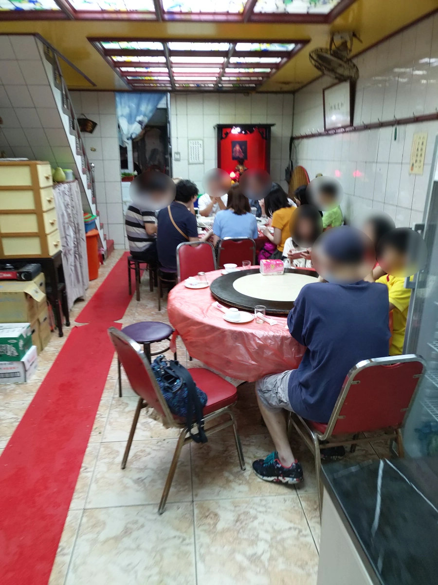
女王大人昨天已經事先做好功課，就由太太們去張羅菜色了。環境略破舊，但是好吃就願意接受，確實好吃。 客人多，等了一陣子。
第一道是豬肝配五味醬，這個網路上很多人推薦，吃起來軟中帶硬，煮的算不錯。可惜小孩不愛，都是大人在吃。 後來用豬肝沾別道菜的醬汁、沾芥末醬油，也都不錯。 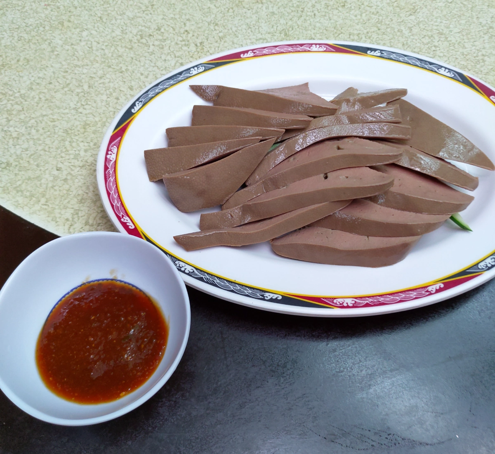
炒海瓜子，肥嫩，醬汁鹹鹹辣辣，正常好吃。但鄉野小店，總是有一兩顆海瓜子可能吐砂沒吐乾淨，要小心。 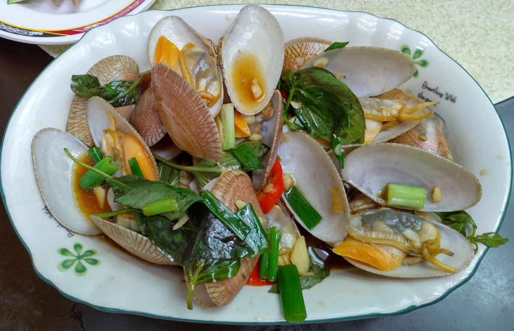
今日第一名 炸紅糟鰻，超多網友推薦，外表酥酥的，中間的鰻魚肉是軟的，鹹香好吃，都沒有魚刺。小朋友都搶著吃。沾胡椒粉更好吃。 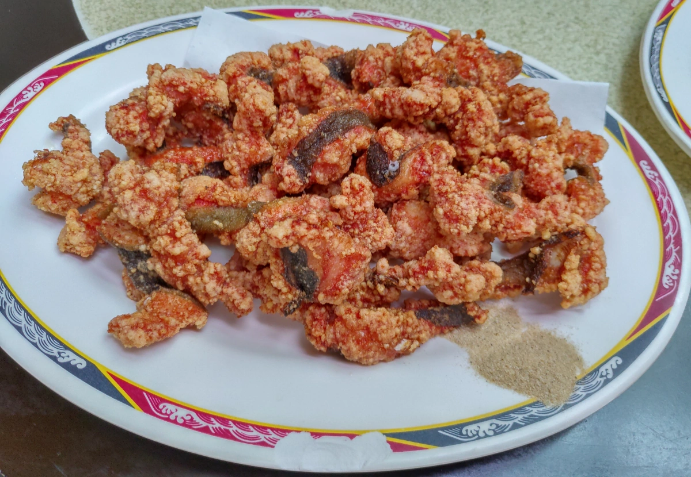
炒飯、炒麵。就中規中矩，以知名熱炒店的平均水準來看，這兩道基本澱粉類，差不多是平均水準而已，中等。 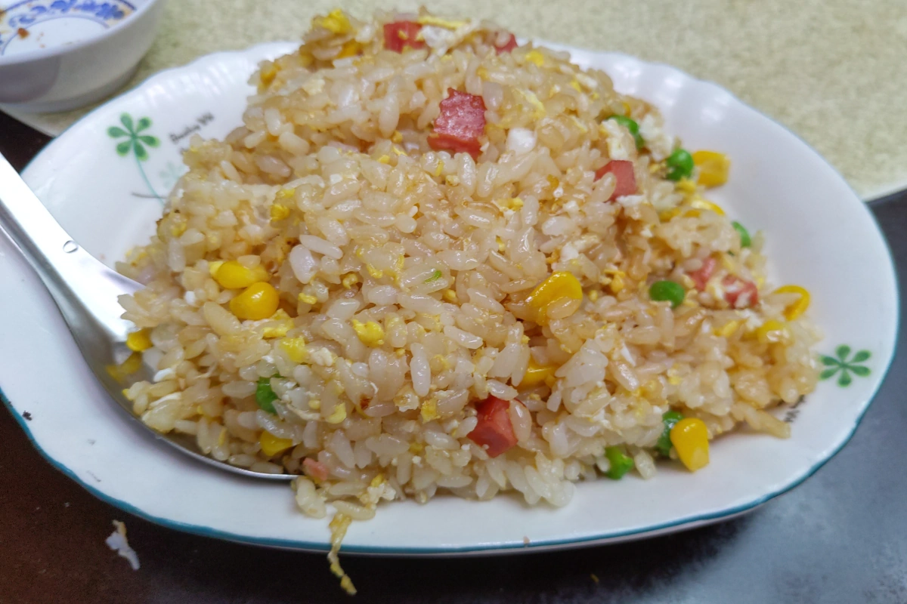 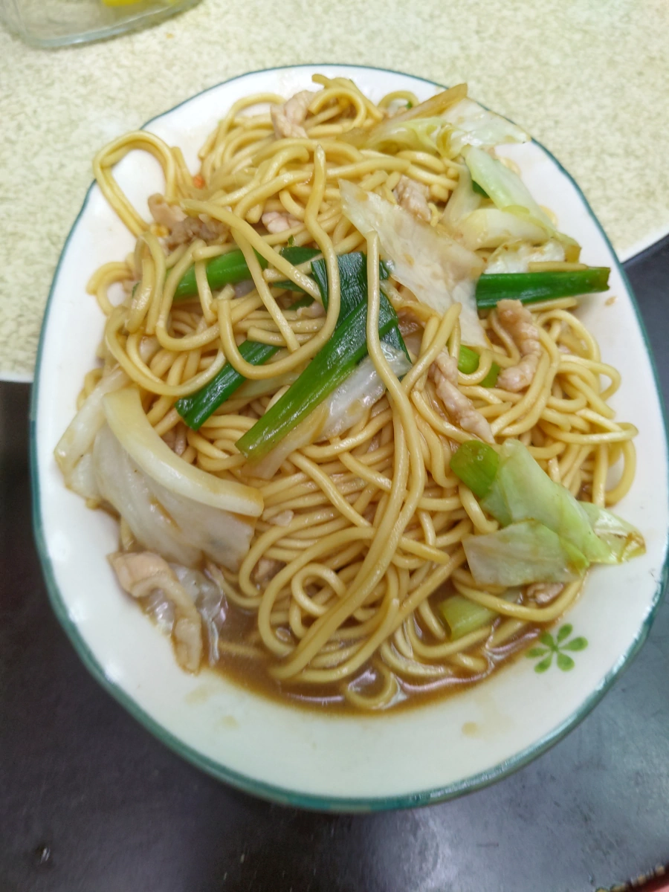
魚湯，魚肉連骨，與薑片一起煮。臨時煮的，燉的不夠久，還不算是好喝的高湯。且有輕微魚腥味。全部就這道菜最後打包了，回家加味增，加一點料，就沒魚腥味了，多煮了一次，湯更好喝了。 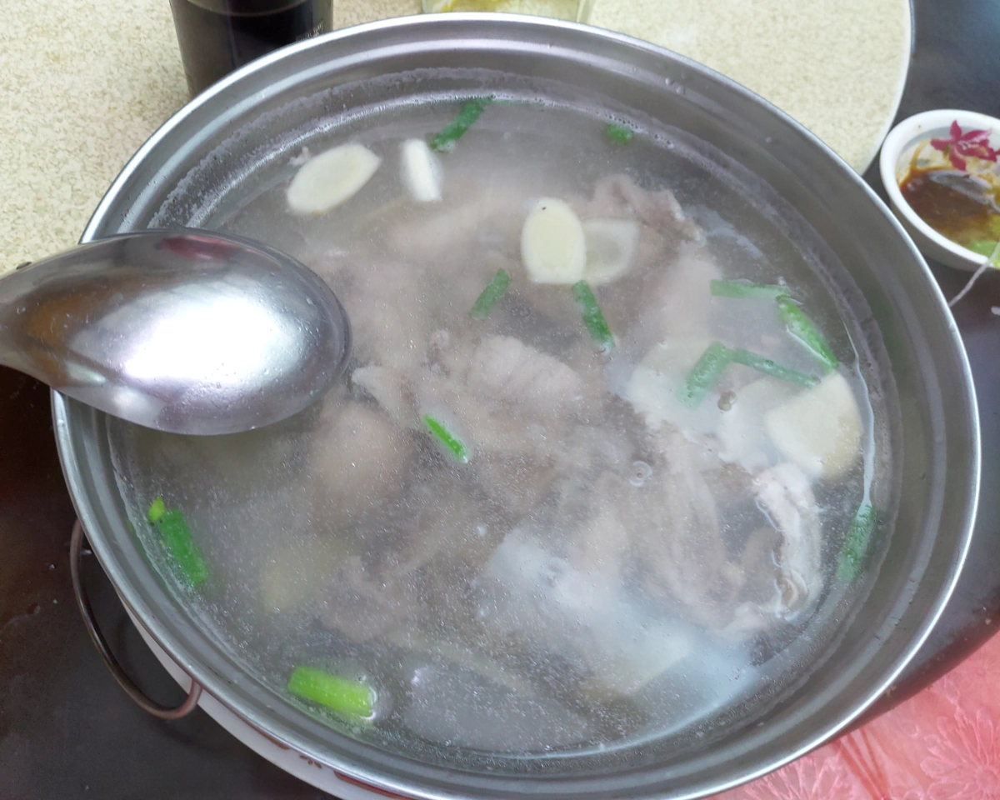
今日重頭戲，清蒸沙公，兩隻螃蟹含料理 店家收費約 1200 元。萬里蟹並不是沙公，而是 花蟹、三點蟹、石蟳 三種。 可是網路上、店家都說，三點蟹肉細緻，可是吃不飽，最後都還是沙公。清蒸就是吃原味，小朋友都攻向大螯，大家都吃的很開心。 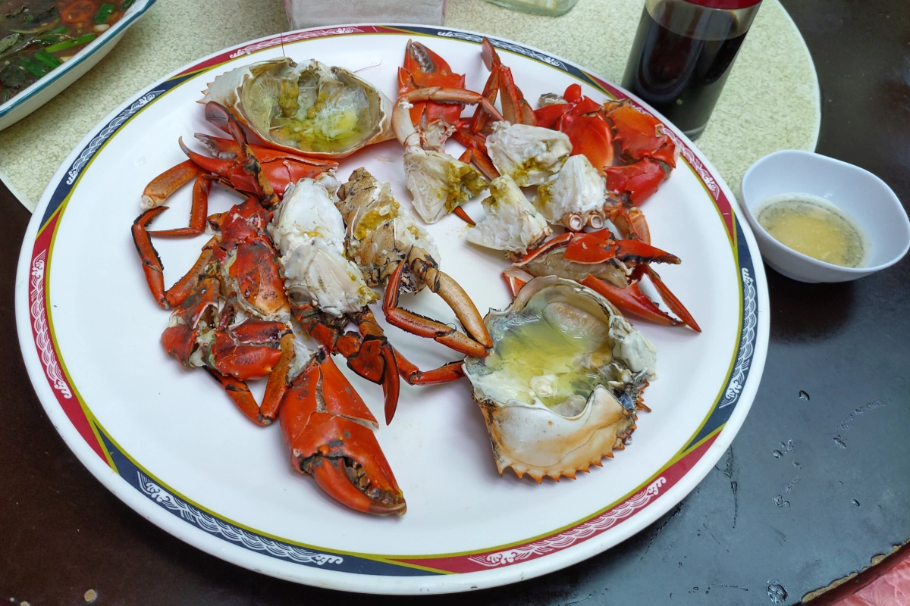
墨魚香腸是今天第二名，吃之前覺得是會好吃到哪裏，在別的地方也吃過，就還好啊。沒想到，這邊真的不一樣，外皮有炸到脆，白色墨魚塊軟嫩，加上胡椒鹽，頗好吃。 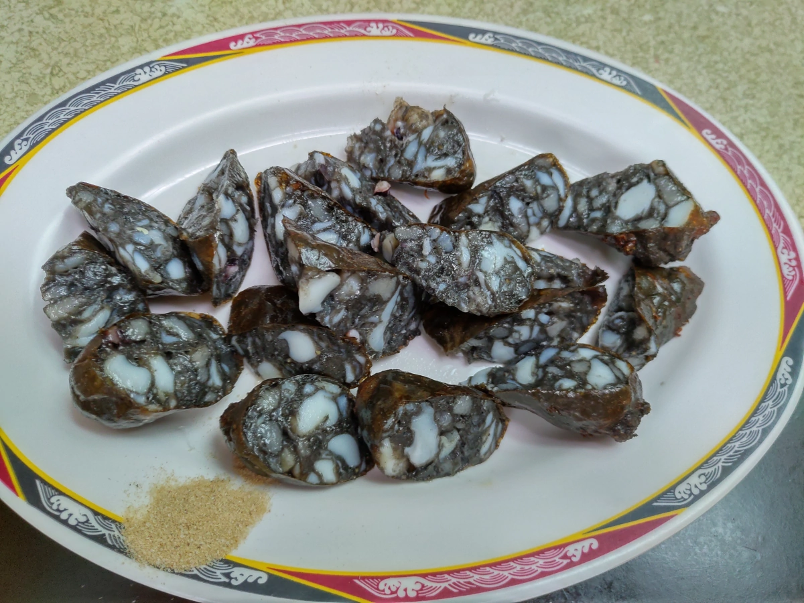
海鮮老店的生魚片，店家配旗魚、紅甘 與 蝶魚(? 老闆說又名?鯧)，魚肉新鮮，解凍的程度很剛好。蝶魚口感有點堅韌，我還是比較喜歡旗魚、紅甘。加上芥末醬油，是豪邁好吃的大塊生魚片。 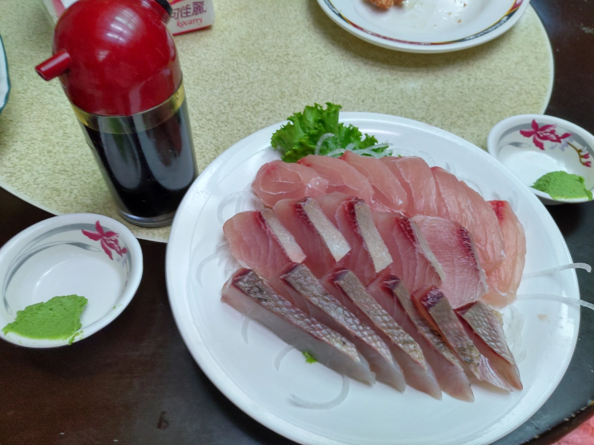
炒福山萵苣，吃了一半才想起來拍照，炒的是不錯吃，可是福山萵苣先天有點微苦味，就將就吃吧。 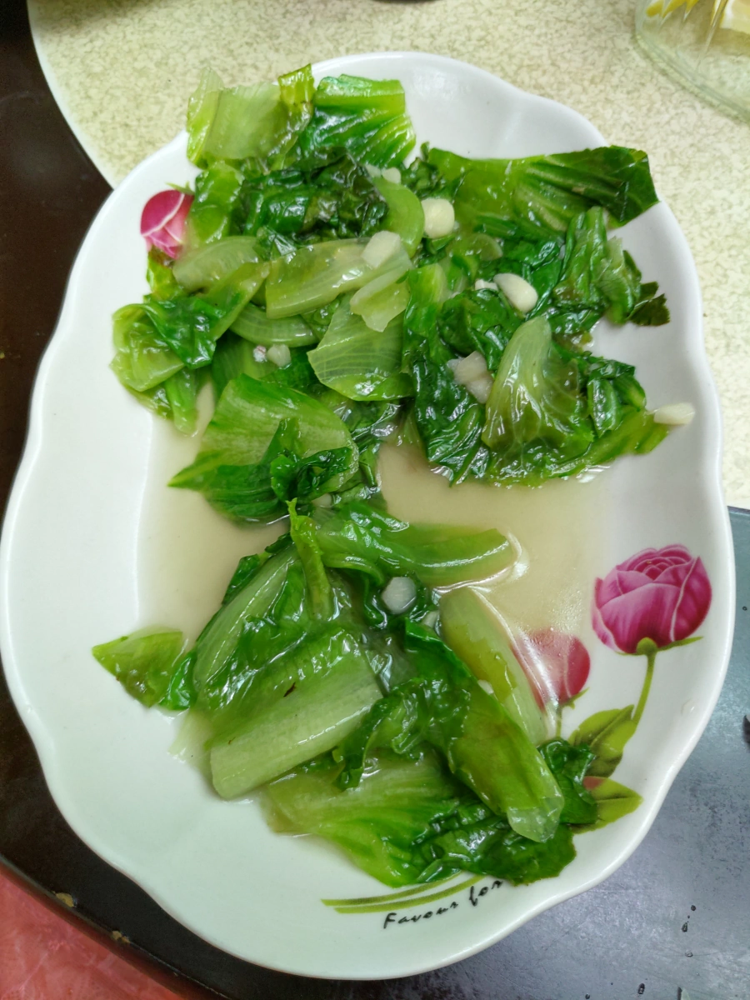
安一五郎海產的菜真是好吃，我願意為了這些菜再回訪。但是也要抱怨一下，環境不髒但很老舊、擁擠。老服務生只能盡忠職守地端菜上來，其他什麼要求，什麼問題 都不用問了，問了也不知道。最討厭的是客人多，上菜間隔時間拖很久，總共吃了兩個小時多。通常出了幾道菜，又停超久的，最後的炒麵、炒青菜， 拖太久本來想取消，廚師又宣稱都做好了，只是沒人力端上來。可是過了很久，才端上來，菜也是熱的，很矛盾。結帳時，老闆有略表歉意。
唉，環境老舊，趕快上菜，我們趕快吃完，趕快走，老闆也能接新客人，這不是很好啊。老闆有點年紀了，大概就不改，做到退休吧。 不曉得第二代是不是要接班，第二代能不能把現代化帶進這間海鮮名店呢。